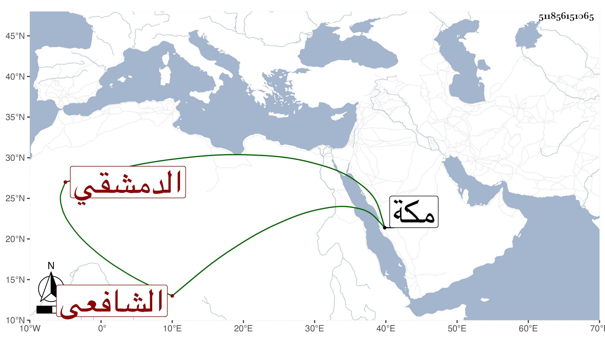

0902Sakhawi.DawLamic.ITO20230111-ara1.EIS1600.511856151065
Biography ID: 511856151065
807
محمد بن أبي القسم الشمس الدمشقي الشافعي نزيل مكة ويعرف بابن الأجل . ذكر أنه ولد سنة ثلاثين وسبعمائة وأنه قرأ الفقه على التقي السبكي والفخر المصري الشافعي وغيرهما ، وكان فقيها فاضلا مستحضرا لفوائد مع زهد وتخيل من الناس وانحراف عنهم وتخل عن دنيا طائلة حيث تركها وآثر الإقامة بمكة على طريقة حميدة حتى مات بها بعد مجاورته نحو خمس عشرة سنة في النصف الثاني من ربيع الأول سنة خمس ، ذكره التقي بن فهد في معجمه ومن قبله التقي الفاسي .
